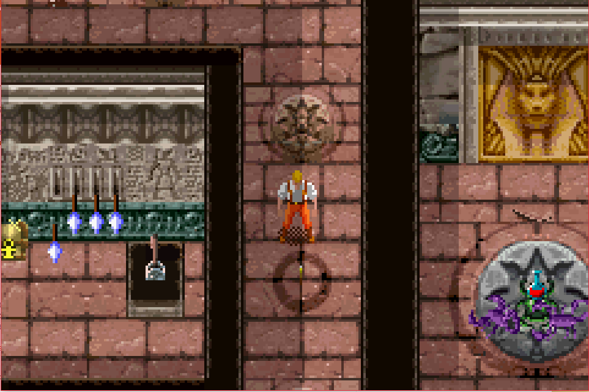
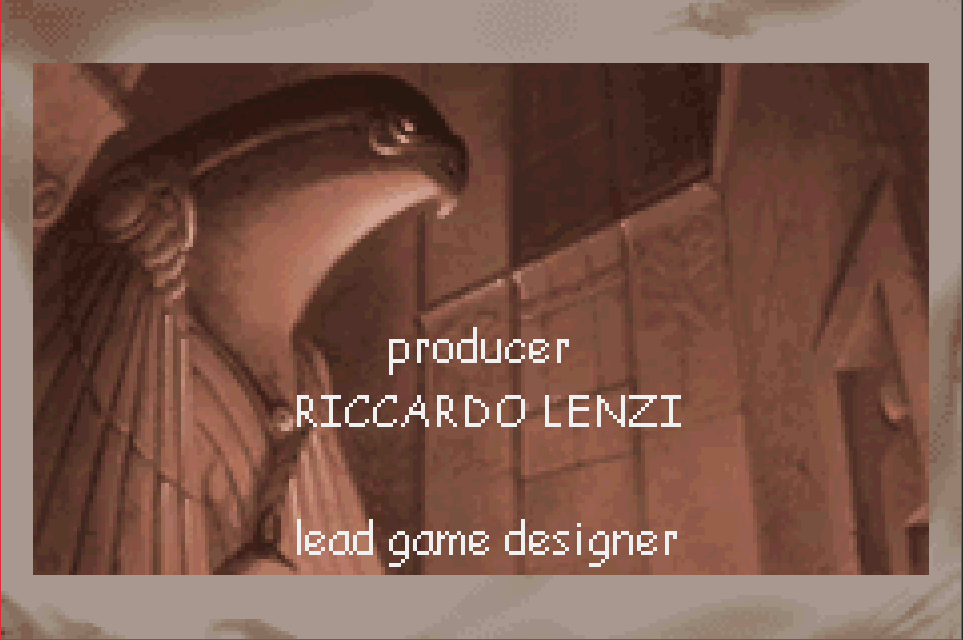
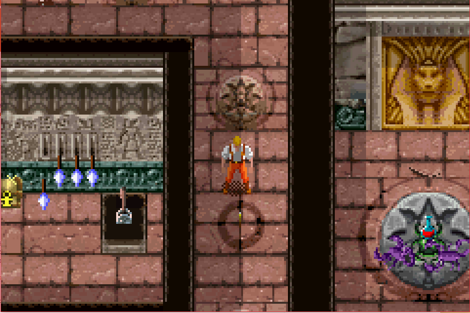
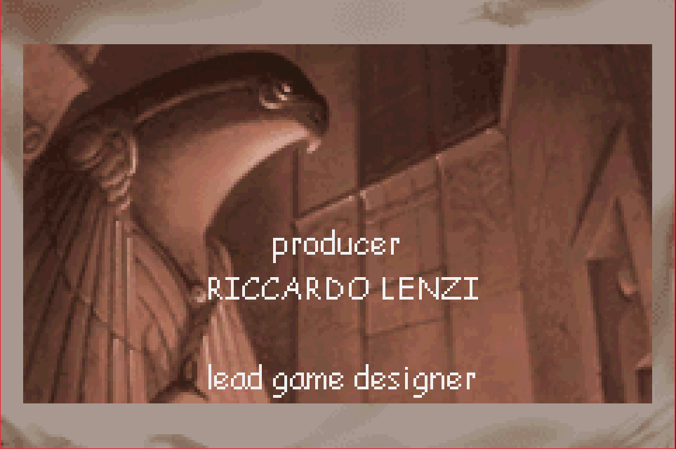

Complete on 2018-04-4
Complete on 2018-04-4
2 / 5
Release Date: Nov 20, 2002
Meta Score: 72
Complete on 2018-04-4
2 / 5
Release Date: Nov 20, 2002
Meta Score: 72
 



The Mummy is another tie in game. It's based on the early 2000s cartoon series, which is based on the 1999 film of the same name (which is itself a remake/reboot of a classic horror film). So we're already several levels deep in adaptation.
In terms of gameplay, it's a top down action-adventure title, most reminiscent of something like a 2D Zelda game.
In some ways, The Mummy isn't a bad game. I actually had a bit of fun in the first level, discovering the mechanics. You switch between the 3 family members (Father, Mother, and Son) any time, who each have different abilities. They can all fight, the son can cast spells and activate magic stuff, the mother can read hieroglyphs and do sweet flips, and the dad is stronk and can move heavy stuff. Generally you're always trying to unlock doors, to find keys, to unlock more doors. There's some puzzle solving, but it's not very challenging. Nearly all the puzzles can be solved by just pressing all available switches, opening all chests, etc.
Where it goes wrong, is that it stretches all this out over 4 levels, and barely introduces any new elements. There are 4 types of enemies in the whole game, and you'll fight about a million scorpions. There are a tiny number of puzzle elements which are combined in every possible combination. Each level has a new background tileset, but they all stick close to the theme of "egyptian ruins".
Combat is mostly functional, you can punch and block, or cast spells if you switch to the son. Everyone has a separate life bar, and if one of them dies you end up having to find a revive point to revive them as you'll need their unique abilities to unlock doors and progress. This ends up mostly being a drag. The hitboxes can be weird, mostly dependent on the way you face. There are 2 boss fights, one of which gets repeated. These were bad, and boil down to wailing on the bosses face and occasionally moving to avoid attacks. I died a few times to these because some of the attacks are bullshit.
The game uses a password save system, with only 4 characters. All it saves is your current level, so say goodbye to your coin collection if you die. Mercifully if you die on a boss the password just spawns you in the boss room for another try.
It has a paper thin story as an excuse for the whole thing. The Mummy is resurrecting, and hanging around Egyptian ruins doing something unspecified. You follow him and eventually stop him.
Overall, The Mummy isn't a terrible game, certainly not the worst I've seen recently, it just stretches itself out for too long.